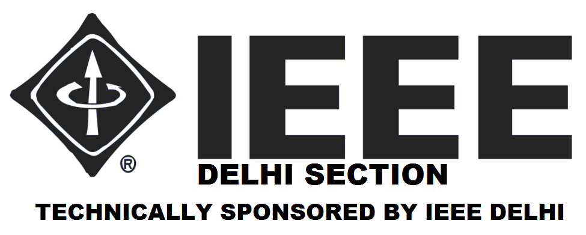
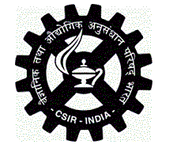
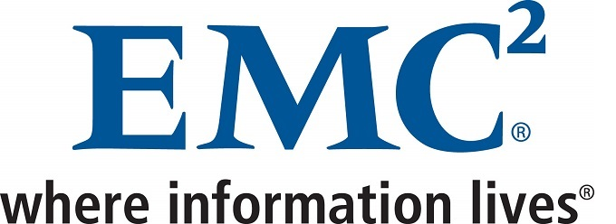
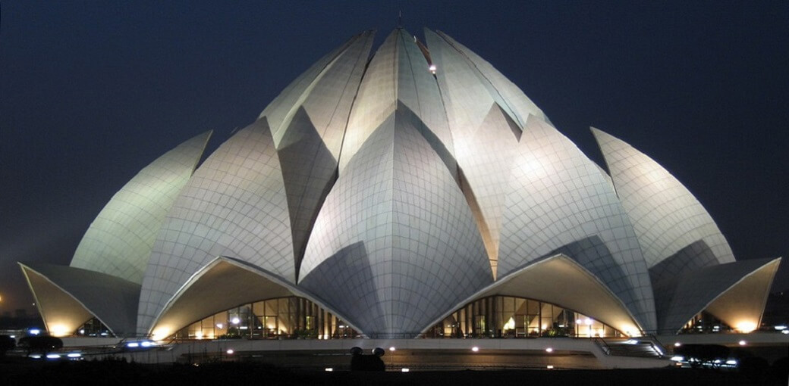
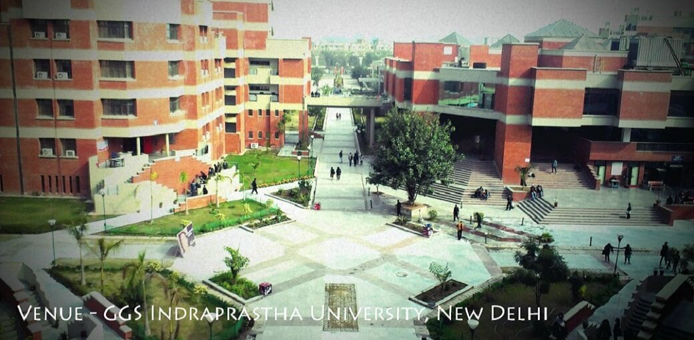
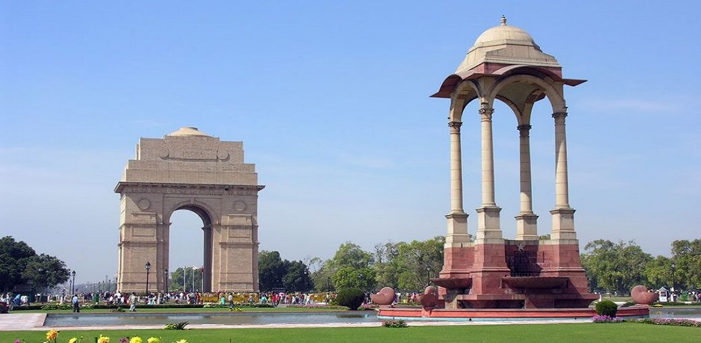
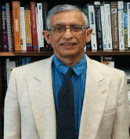
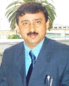
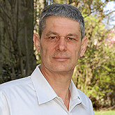
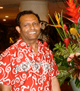

  <!DOCTYPE html>
<html lang="en">
 <head>
        <meta charset="utf-8">
        <meta http-equiv="X-UA-Compatible" content="IE=edge">
        <meta name="viewport" content="width=device-width, initial-scale=1">
     <meta name="theme-color" content="#0972b7">
     <link rel="icon" sizes="192x192" href="nice-highres.png">
        <!-- The above 3 meta tags *must* come first in the head; any other head content must come *after* these tags -->
        <title>ICCTICT-2016</title>
    <link rel="stylesheet" src="css/font.css">
     <link rel="stylesheet" href="https://maxcdn.bootstrapcdn.com/font-awesome/4.4.0/css/font-awesome.min.css">
    <link rel="stylesheet" type="text/css" href="css/boot.css">
	<link rel="stylesheet" type="text/css" href="css/css.css">
    <script type="text/javascript" src="js/jquery.js"></script>
	<script type="text/javascript" src="js/bootstrap.min.js"></script>
	<script type="text/javascript" src="js/handlebars.js"></script>
    <script type="text/javascript" src="js/ember.js"></script>
    <script type="text/javascript" src="js/ember-data.js"></script>
    <script>
     $(function(){
         
$(document).ready(function () {
  $("#topul li a").click(function(event) {
    $(".navbar-collapse").collapse('hide');
  });
});

        var h = window.innerWidth;
         console.log(h);
         var fixHeader;
         if(h > 767) {
             fixHeader =250;
         }
         else if (h > 520 && h <= 767) {
            fixHeader = 120;
         }
         else if (h <= 520) {
             fixHeader = 40;
         }
  $(window).scroll(function() {
    var scroll = getCurrentScroll();
      if ( scroll >= fixHeader && window.innerWidth>767 ) {
        
          $("#scrollogo").css("display","block");
           $('nav').addClass('navbar-fixed-top');
        // $("#headbanner").css("display","none");
        }
        else {
    
            $("#scrollogo").css("display","none");
            $('nav').removeClass('navbar-fixed-top');
            $("#headbanner").css("display","block");

        }
  });
function getCurrentScroll() {
    return window.pageYOffset || document.documentElement.scrollTop;
    }
});
    </script>
    <link rel="stylesheet" type="text/css" href="css/maxcdn.css"/>
    <script type="text/javascript" src="js/app.js"></script>
	
</head>
<body style="background:#e8eaf6;">
<script type='text/x-handlebars' data-template-name='application'>   
    
<div id="overlay">
</div>
<div id="frame">
<center></center>
    <i class="fa fa-close fa-2x" style="position:fixed;top:4%;left:82%;cursor:pointer;" id="cross"></i>
<!--<i class="fa fa-arrow-left fa-2x" id="arrowleft"></i>
<i class="fa fa-arrow-right fa-2x" id="arrowright" ></i>-->
    <p id="abh2" class="disp keynote">
				Dr. Abhijit Sen holds a PhD. from McMaster University, Hamilton, Ontario, Canada and Master of Science degree from University of California, Berkeley, USA, B.Tech in Electrical Engineering from Indian Institute of Technology, Kharagpur, India. He has over 30 years of academic and administrative experience at Kwantlen Polytechnic 
University. He served as a chair of the department for over 14 years. Abhijit has also been a visiting professor at Waikato University, Hamilton, New Zealand, and Munich University of Applied Sciences, Germany, Centre for Development of Advanced Computing, India, and North China Institute of Aerospace Engineering, China. 
 
His current research interests are in the areas of Wireless Networking and Security, Radio Frequency Identification (RFID), Computing Education and Teaching Methodologies, Distributed Systems and Databases.

				</p>
    <p id="bim2"  class="disp keynote">
				Dr Bimlesh Wadhwa has spent more than 24 years researching and teaching in the area of Software Engineering. She holds an MTech and a PhD in Software Engineering. Currently a Senior Lecturer, she has been a Faculty at the School of Computing, National University of Singapore since year 2000. Her current research interests includes innovative pedagogy of Software Engineering and Human Computer Interactions. She has published several papers in International conferences and journals. With extremely Rich Exposure & Experience of  Teaching, Curriculum Design, and Research  in Computer  Science makes Dr Bimlesh Wadhwa a very Unique & Rare class of Educator.
				</p>
    
    <p id="lui2"  class="disp keynote">
				Dr. Luiz Fernando Capretz has vast experience in the software engineering field as practitioner, manager and educator. Before joining the University of Western Ontario (Canada), he worked at both technical and managerial levels, taught and did research on the engineering of software in Brazil, Argentina, England, Italy, Japan and the United Arab Emirates since 1981. He has authored over 200 academic papers on software engineering in leading international journals and conference proceedings. He is a senior member of IEEE, a distinguished member of the ACM, a MBTI Certified Practitioner, and a Certified Professional Engineer in Canada (P.Eng.). His current research interests are software engineering, human aspects of software engineering, software estimation, software product lines, and software engineering education. Besides work, he enjoys his family life, skiing and playing soccer. 
				</p>
    <p id="pra2"  class="disp keynote">
				Dr. Prabhat. K. Mahanti joined the University of New Brunswick, Saint John faculty in December, 2001. Previous to his appointment as Professor at UNB, Dr.Mahanti was the Chair and Professor of Computer Science and Engineering Department, Birla Institute of Technology, India.He has published over 100 research papers in referred journals and conference proceedings including book chapters. He actively participates in numerous technical conferences; including serving as a conference chair and reviewers on many of them. Currently, he is on the editorial board for the Computer and Informatics- Slovak Academy of Sciences, Slovakia, International Journal of Computing and ICT Research-Uganda, Africa, International Journal of Network and Distributed Systems-Switzerland, and the Journal of Computing and Information Technology-Croatia. He was also the Editor-in-Chief, Journal of Computer, Finland until December 2014.
				</p>
    
    	<p id="san2"  class="disp keynote">
Sanjay Misra is Professor of computer engineering at Covenant University, OTA, Nigeria. He has 21 years of experience in academic administration and researches in various universities in Asia, Europe and Africa. He has author/coauthor in more than 170 papers- (with colleagues from nearly 20 countries) and majority of the publications are in ISI Web of Sciences, He got several awards for outstanding publications. Recently, Institute of Engineering and Technology(IET), United Kingdom awarded him ‘2014 IET Software Premium Award’  for Best Paper published in last two years. He has delivered 23 plenary and keynote speeches ( in IEEE, Springer, Elsevier sponsored conferences) and 33 invited talks (workshops/seminars/lecture) in various universities and institutions in more than 30 Countries. He is editor in chief of the book series on Advances in IT Personals and Project management (IGI Global), author of 1 book and editor (one of) in 20 Lecture Notes in Computer Science (Springer), 5 IEEE conference proceedings. He was General Chair of 6th IEEE ICAST: 2014 and founder chair of 3 annual international workshops: Software Engineering Process and Applications (SEPA), & Software Quality(SQ) (published by Springer, Tools and Techniques in Software Development Process (published by  IEEE).
				</p>
			
				<p id="deb2"  class="disp keynote">
				Dr. Narayan C. Debnath is a Full Professor and Chairman of Computer Science at Winona State University, Minnesota, USA.  He is also serving as the Director and Past President of the International Society for Computers and Their Applications (ISCA).  Dr. Debnath is a recipient of a Doctorate degree in Computer Science and a Doctorate degree in Applied Physics (Electrical Engineering). In the past, he served as the President, Vice President, and Conference Coordinator of the International Society for Computers and Their Applications (ISCA).  Professor Debnath has made numerous teaching and research presentations at various national and international conferences, industries, and teaching and research institutions in Africa, Asia, Australia, Europe, North America, and South America.  He has been serving as an international teaching and research advisor/coordinator of the Master of Software Engineering Program at the National Universities in Argentina, South America, since 2000.  
				</p>
    
</div>    
    
<div class="container-fluid ">
<div class="row">
<div class="col-md-12 ">
<!--img src="img/head.jpg" class="img-responsive"></img-->
    <div id="headbanner" class="row default-primary-color" style="display:block;">
<div class="col-md-12 zeropad whitetext">
<!--img src="img/head.jpg" class="img-responsive"></img-->
<div style="width:15vw; float:left; "></img></div>
				<div style="width:50vw; float:left;  padding: 5px 5px 5px 5px">
                    <div id="headname" style="color:white; font-size:7vw; padding:2px 2px 2px 2px;"><strong>ICCTICT<small><sup> 2016</sup></small></strong></div>
					<div id="header1" style="padding: 1px 1px 1px 1px">
                    <div style="font-size: 1vmax; border-bottom:1px solid white;">INTERNATIONAL CONFERENCE ON COMPUTATIONAL TECHNIQUES IN INFORMATION AND COMMUNICATION TECHNOLOGIES</div>
					<div style="font-size: 1vmax;">11th - 13th March 2016</div>
					<div style="font-size: 1vmax;">NEW DELHI, INDIA</div>
				</div>
        </div>
				<div style="width:22vw; float:right; padding: 2vmin 2vmin 2vmin 2vmin; margin-right:3vw; margin-top:1vh;"></img></div>
</div>
    </div>

<div class="container-fluid zeropad fullpage">
<!-- Navigation -->
    <nav class="navbar-inverse default-primary-color white-text" role="navigation" style="box-shadow: 0 0 4px rgba(0,0,0,.14),0 4px 8px rgba(0,0,0,.28);">
        <div class="container-fluid ">
            <!-- Brand and toggle get grouped for better mobile display -->
            <div class="navbar-header">
                <div class="row">
                    <div id="scrollogo" style="width:30vw; float:left; display:none; margin-left:5px; padding-left:5px;">
                        <!--img src="img/icctict_logo.png" style="height:50px; width:50px; margin:0;" class="mob_visible"-->
</div>   
                
                    <div style="width:30vw; float:right">
                <button type="button" class="navbar-toggle bcolor" data-toggle="collapse" data-target="#bs-example-navbar-collapse-1">
                    <span class="sr-only">Toggle navigation</span>
                    <span class="icon-bar"></span>
                    <span class="icon-bar"></span>
                    <span class="icon-bar"></span>
                </button>
                        </div>
                </div>
            </div>
            <!-- Collect the nav links, forms, and other content for toggling -->
            <div class="collapse navbar-collapse" id="bs-example-navbar-collapse-1">
                <ul class="nav nav-pills nav-justified" id="topul">
                    <li>
                
                        {{#link-to 'index'}}HOME{{/link-to}}
                    </li>
					 <li>
                       {{#link-to 'committee'}}COMMITTEE{{/link-to}}
                    </li>
					 <li>
                
                         {{#link-to 'callforpapers'}}CALL FOR PAPERS{{/link-to}}
                    </li>
					 <li>
                         {{#link-to 'guidlines'}}GUIDELINES{{/link-to}}
                    </li>
                    <!--INCOMPLETE
					<li>
                        {{#link-to 'program'}}PROGRAM{{/link-to}}
                    </li>
					-->
                    <li>
                        {{#link-to 'registration'}}REGISTRATION{{/link-to}}                        
                    </li>
					  <li>
                {{#link-to 'contact'}}CONTACT{{/link-to}}          
                    </li>
					  <!--INCOMPLETE
					  <li>
                          {{#link-to 'sponsor'}}SPONSOR{{/link-to}}
                    </li>
					-->
                </ul>
            </div>
            <!-- /.navbar-collapse -->
			</div>
			</nav>
</div>
</div>
</div>
<div class="container-fluid col-md-10 col-md-offset-1">   
    
    <div class="col-md-4 whitbg mob_visible">
        <p class="ribbon">   Special Track on <br>Digital India, Initiative of Government of India</p>
        <!--img class="img-responsive" src="img/digital-india.jpg"/>
        <h4 class="alert-failure" style="font-weight:bold; text-align:center;color:orange; ">Special track on Digital India, initiative of Government of India</h4-->
       <center><h3>IMPORTANT DATES</h3></center>
<ul>
    <li><br></li>
  <li class="light-primary-color">Full Paper <!--a href="http://edas.info/N19593">Submission</a-->Submission Date: <br><strong>31<sup>st</sup> October, 2015 <strike>   30<sup>th</sup> September, 2015</strike></strong></li>
  <!--li class="alert-danger">Last Date of receiving full paper: <br><strong>31<sup>st</sup> October, 2015   <strike> 30<sup>th</sup> September, 2015</strike></strong></li-->
    <li><br></li>
	<li class="light-primary-color">E-mail notification of paper acceptance: <br><strong>15<sup>th</sup> December, 2015</strong></li>
	<li class="light-primary-color">Final Paper <!--a href="http://edas.info/N19593">Submission</a-->Submission Date: <br><strong>15th January, 2016 </strong></li>
	<li class="light-primary-color">Last Date for registration :<br><strong>2<sup>nd</sup> February, 2016</strong></li>
  <li class="light-primary-color">Date of Conference :<br><strong>11<sup>th</sup> - 13<sup>th</sup> March, 2016</strong></li>
</ul>
    <br>
    </div>
    <div class="col-md-4 sidebar material whitbg" id="impdates">
            <!--h4 class="alert-failure" style="font-weight:bold; text-align:center; color:orange;">Special track on Digital India, initiative of Government of India</h4-->
        <p class="ribbon">Special Track on <br>Digital India, Initiative of Government of India</p>
        <!--img class="img-responsive" src="img/digital-india.jpg"/-->

            <center><h3>IMPORTANT DATES</h3></center>
<ul>
    <li><br></li>
  <li class="light-primary-color">Full Paper <!--a href="http://edas.info/N19593">Submission</a-->Submission Date: <br><strong>31<sup>st</sup> October, 2015 <strike>   30<sup>th</sup> September, 2015</strike></strong></li>
  <!--li class="alert-danger">Last Date of receiving full paper: <br><strong>31<sup>st</sup> October, 2015   <strike> 30<sup>th</sup> September, 2015</strike></strong></li-->
    <li><br></li>
	<li class="light-primary-color">E-mail notification of paper acceptance: <br><strong>15<sup>th</sup> December, 2015</strong></li>
	<li class="light-primary-color">Final Paper <!--a href="http://edas.info/N19593">Submission</a-->Submission Date: <br><strong>15th January, 2016 </strong></li>
	<li class="light-primary-color">Last Date for registration :<br><strong>2<sup>nd</sup> February, 2016</strong></li>
  <li class="light-primary-color">Date of Conference :<br><strong>11<sup>th</sup> - 13<sup>th</sup> March, 2016</strong></li>
</ul>
<p>
				  All paper 
				  submissions should be made electronically in the pdf format 
				  through the EDAS system.</p>
				  
				  
				  <p>
				  <span>
				  <a href="http://edas.info/N19593" target="_blank">
				  http://edas.info/N19593</a></span></p>
				<hr/>
				
				<p>Accepted and presented papers will be published in the conference proceedings and submitted to IEEE Xplore Digital library for  publication.</p>
        
				<!---->
        <h4><br>IEEE Conference ID : <a href="http://www.ieee.org/conferences_events/conferences/conferencedetails/index.html?Conf_ID=37137">37137</a></h4>

              <h3>IEEE OVERSIGHT</h3>
        <strong>IEEE Delhi section oveCrsight committee:</strong><br />
        Prof. Abdul Q. Ansari, SMIEEE<br />
        Prof. M. N. Hoda, SMIEEE<br />
        Prof. Mridula Gupta, SMIEEE<br />
        Dr. Prerna Gaur, SMIEEE<br />
        Dr. Manav R. Bhatnagar, SMIEEE
	<br />
	<h3>VENUE</h3>
   <p>University School of Information and Communication Technology,<br />
			  GGS Indraprastha University,<br> Dwarka Sector - 16 C, New Delhi-110078<br />
    </p>
        <h3>VENUE CONTACT</h3>
   <p><strong>Prof. Chandra Shekhar Rai </strong><br />
			  Conference Chair<br />
       E-Mail: <a href="mailto:icctict@ipu.ac.in">csrai@ipu.ac.in</a><br />
              Phone :+91-11-25302700
    </p>
	
	</div>
    <div class="col-md-8 whitebg material">
{{outlet}}
    </div>
</div>
<div class="container-fluid zeropad">
<!--<div class="row">
<div class="col-md-12 zeropad">
</img>
</div>
</div>-->
    
<div class="row">
    <div class="col-md-12  default-primary-color" style="font-size:2.5vmax; text-align:center; color:white">
        SUPPORTERS
    </div>
</div>    
    
<div class="row" style="padding-top:2vh">
    <table style="width:100%">
        <tr style="width:100%">
            <td style="width:20%"></td>
            <td style="width:20%"></td>
            <td style="width:20%"></td>
            <td style="width:20%"></td>
            <td style="width:20%"></td>
        </tr>
    </table>
</div>
    
</div>
</script>
<script type='text/x-handlebars' data-template-name='index'>
        <div class="row">
            <div class="col-md-12">
                <div class="col-md-12" style="padding:18px;">
     <!-- Carousel
    ================================================== -->
    <div id="myCarousel" class="carousel slide" data-ride="carousel">
      <!-- Indicators -->
      <ol class="carousel-indicators">
        <li data-target="#myCarousel" data-slide-to="0" class="active"></li>
        <li data-target="#myCarousel" data-slide-to="1"></li>
        <li data-target="#myCarousel" data-slide-to="2"></li>
          <li data-target="#myCarousel" data-slide-to="3"></li>
          <li data-target="#myCarousel" data-slide-to="4"></li>
      </ol>
      <div class="carousel-inner" role="listbox">
        <div class="item active">
          
          <div class="container">
            <div class="carousel-caption">
              <!--h3>Example headline.</h3>
              <p>Note: If you're viewing this page via a <code>file://</code> URL, the "next" and "previous" Glyphicon buttons on the left and right might not load/display properly due to web browser security rules.</p-->
              
            </div>
          </div>
        </div>
        <div class="item">
          
          <div class="container">
            <div class="carousel-caption">
              <!--h3>Another example headline.</h3>
              <p>Cras justo odio, dapibus ac facilisis in, egestas eget quam. Donec id elit non mi porta gravida at eget metus. Nullam id dolor id nibh ultricies vehicula ut id elit.</p-->
              
            </div>
          </div>
        </div>
        <div class="item">
          
          <div class="container">
            <div class="carousel-caption">
              <!--h3>One more for good measure.</h3>
              <p>Cras justo odio, dapibus ac facilisis in, egestas eget quam. Donec id elit non mi porta gravida at eget metus. Nullam id dolor id nibh ultricies vehicula ut id elit.</p-->
             
            </div>
          </div>
        </div>
          <div class="item">
          
          <div class="container">
            <div class="carousel-caption">
              <!--h3>One more for good measure.</h3>
              <p>Cras justo odio, dapibus ac facilisis in, egestas eget quam. Donec id elit non mi porta gravida at eget metus. Nullam id dolor id nibh ultricies vehicula ut id elit.</p-->
             
            </div>
          </div>
        </div>
          <div class="item">
          
          <div class="container">
            <div class="carousel-caption">
              <!--h3>One more for good measure.</h3>
              <p>Cras justo odio, dapibus ac facilisis in, egestas eget quam. Donec id elit non mi porta gravida at eget metus. Nullam id dolor id nibh ultricies vehicula ut id elit.</p-->
             
            </div>
          </div>
        </div>
      </div>
      <a class="left carousel-control" href="#myCarousel" role="button" data-slide="prev">
        <span class="glyphicon glyphicon-chevron-left" aria-hidden="true"></span>
        <span class="sr-only">Previous</span>
      </a>
      <a class="right carousel-control" href="#myCarousel" role="button" data-slide="next">
        <span class="glyphicon glyphicon-chevron-right" aria-hidden="true"></span>
        <span class="sr-only">Next</span>
      </a>
    </div><!-- /.carousel -->
       
	</div>
         
		</div>
        </div>

<div class="row">
<div class="col-md-12"  >
<div class="row gap rorder" style="padding-bottom:10px">
    <div class="col-md-6" >
<h3><center>ABOUT ICCTICT 2016</center></h3>
        <br>
<article>
The Conference endeavors to provide a forum for researchers, scientists, practicing engineers and academicians to present their contribution to the recent technological advances, innovation and experiences in the area of Information and Communication Technology (ICT). The conference will have four tracks and the deliberations will be in the form of accepted paper presentations, keynotes and invited talks. Moreover, the conference emphasises on the innovations to improve the quality of different stakeholders of society throught the usage of ICT, like the Digital India initiative of Government of India.
</article>
</div>
    
     <div class="col-md-6 paddingl">
<h3><center>ABOUT DELHI</center></h3>
         <br>
<article>
There is a saying for the Delhiites ‘Dillwallon ka sheher’ i.e. a city of large hearted people and it is very true. It has been the capital of many previous civilizations and each have left behind layers of mesmerizing history, culture and monuments. It is a gastronome’s pleasure garden, criss crossed by wide, leafy boulevards and it is the country’s cultural heart and political center. Delhi is a glorious city and a paradise for shoppers. Delhi’s climate is greatly influenced by its proximity to the Himalayas and the Thar Desert, causing it to experience both weather extremes. People who come to Delhi fall in love with the city.
</article>
    </div>    
</div>

</div>

</div>
   

 <div class="row gap border" id="speakers">
     <div class="col-md-12">
     <h3><center>KEYNOTE SPEAKERS</center></h3>

    <div class="col-md-4 lightbox">
		
         
         <p><strong>Dr. Abhijit Sen<br></strong>

<small>Professor<br> Computing Science,<br>Kwantlen Polytechnic University,<br>Canada</small><br><br></p>
     </div>     
     <div class="col-md-4 lightbox">  
         
         <p><strong>Dr. Prabhat. K. Mahanti<br> </strong> 

<small>Professor<br> Computer Science,<br> University of New Brunswick, Canada</small><br><br></p>
     </div>
     <div class="col-md-4 lightbox">
		
         
         <p><strong>Dr. Sanjay Misra<br></strong>
<small>
Professor<br> Computer Engineering,<br>

          Covenant University,<br> Nigeria</small><br><br></p>
     </div>
         
	 </div>
	 <div class="row gap border" id="speakers">
     <div class="col-md-4 lightbox">  
         
         <p><strong>Dr. Luiz Fernando Capretz<br></strong>

<small>Professor & Assistant Dean <br>Software Engineering,<br> Western 

          University,<br> Canada</small><br><br></p>
     </div>
    <div class="col-md-4 lightbox">
     
        
        <p><strong>Dr Bimlesh Wadhwa<br></strong>

<small>Senior Lecturer<br>School of Computing,<br>

National University of Singapore, Singapore</small><br><br></p>
     
     </div>
     <div class="col-md-4 lightbox">  
         
         
         <p><strong>Dr. Narayan C. Debnath<br></strong>

<small> Professor and Chairman<br>Department of Computer 

              Science, Winona State University,<br> United States of America</small><br><br></p>
    
     </div>
     </div>
<br><br></div>
    
    
    </script>
	<script type='text/x-handlebars' data-template-name='keynote'>
        
 <div class="row">
<div class="col-md-12">
		<center>
		<h3>KEYNOTE SPEAKERS</h3>
	
			<div class="row">
				<div class="col-md-12">
				<h3>Dr. Abhijit Sen
				Professor, Computing Science 
				</h3>
				
				<p class="keynote" id="abh2">
				Dr. Abhijit Sen holds a PhD. from McMaster University, Hamilton, Ontario, Canada and Master of Science degree from University of California, Berkeley, USA, B.Tech in Electrical Engineering from Indian Institute of Technology, Kharagpur, India. He has over 30 years of academic and administrative experience at Kwantlen Polytechnic 
University. He served as a chair of the department for over 14 years. Abhijit has also been a visiting professor at Waikato University, Hamilton, New Zealand, and Munich University of Applied Sciences, Germany, Centre for Development of Advanced Computing, India, and North China Institute of Aerospace Engineering, China. 
 
His current research interests are in the areas of Wireless Networking and Security, Radio Frequency Identification (RFID), Computing Education and Teaching Methodologies, Distributed Systems and Databases.

				</p>
				</div>
			</div>
         
			<div class="row">
				<div class="col-md-12">
				<h3>Dr Bimlesh Wadhwa
				Senior Lecturer,School of Computing
NUS, Singapore</h3>
				
				<p class="keynote" id="bim2">
				Dr Bimlesh Wadhwa has spent more than 24 years researching and teaching in the area of Software Engineering. She holds an MTech and a PhD in Software Engineering. Currently a Senior Lecturer, she has been a Faculty at the School of Computing, National University of Singapore since year 2000. Her current research interests includes innovative pedagogy of Software Engineering and Human Computer Interactions. She has published several papers in International conferences and journals. With extremely Rich Exposure & Experience of  Teaching, Curriculum Design, and Research  in Computer  Science makes Dr Bimlesh Wadhwa a very Unique & Rare class of Educator.
				</p>
				</div>
			</div>
			<div class="row">
				<div class="col-md-12">
				<h3>Dr. Luiz Fernando Capretz
				Professor of Software Engineering, Assistant Dean (IT & e-Learning), Western University Canada
				</h3>
				
				<p class="keynote" id="lui2">
				Dr. Luiz Fernando Capretz has vast experience in the software engineering field as practitioner, manager and educator. Before joining the University of Western Ontario (Canada), he worked at both technical and managerial levels, taught and did research on the engineering of software in Brazil, Argentina, England, Italy, Japan and the United Arab Emirates since 1981. He has authored over 200 academic papers on software engineering in leading international journals and conference proceedings. He is a senior member of IEEE, a distinguished member of the ACM, a MBTI Certified Practitioner, and a Certified Professional Engineer in Canada (P.Eng.). His current research interests are software engineering, human aspects of software engineering, software estimation, software product lines, and software engineering education. Besides work, he enjoys his family life, skiing and playing soccer. 
				</p>
				</div>
			</div>
			<div class="row">
				<div class="col-md-12">
				<h3>Dr. Prabhat. K. Mahanti
				Professor, Computer Science , University of New Brunswick, Canada
				</h3>
				
				<p class="keynote" id="pra2">
				Dr. Prabhat. K. Mahanti joined the University of New Brunswick, Saint John faculty in December, 2001. Previous to his appointment as Professor at UNB, Dr.Mahanti was the Chair and Professor of Computer Science and Engineering Department, Birla Institute of Technology, India.He has published over 100 research papers in referred journals and conference proceedings including book chapters. He actively participates in numerous technical conferences; including serving as a conference chair and reviewers on many of them. Currently, he is on the editorial board for the Computer and Informatics- Slovak Academy of Sciences, Slovakia, International Journal of Computing and ICT Research-Uganda, Africa, International Journal of Network and Distributed Systems-Switzerland, and the Journal of Computing and Information Technology-Croatia. He was also the Editor-in-Chief, Journal of Computer, Finland until December 2014.
				</p>
				</div>
			</div>
			<div class="row">
				<div class="col-md-12">
				<h3>Dr. Sanjay Misra
				 Professor of Computer Engineering Covenant University, Nigeria</h3>
				
				<p class="keynote" id="san2">
				Dr. Sanjay Misra is Full Professor of computer engineering at Covenant University, OTA, Nigeria. He has 21 years of wide experience in academic administration and researches in various universities in Asia, Europe and Africa. His current researches cover the areas of software quality, software process improvement, software project management, object oriented technologies, XML, SOA, Web services, cognitive informatics, artificial intelligence, neural network, health Informatics, e-learning, cloud computing and cyber security. He is editor in chief of the book series on Advances in IT Personals and Project management (IGI Global), author of 1 book and editor (one of) in 20 Lecture Notes in Computer Science (Springer), 5 IEEE conference proceedings. He is General Chair of 6th IEEE ICAST: 2014 and founder chair of 3 annual international workshops: Software Engineering Process and Applications (SEPA), Springer (2009-2015), Tools and Techniques in Software Development Process, IEEE (2009-2015), Software Quality, IEEE (2009), LNCS (2011-2015) and Software Metrics and Measurement, IEEE (2009). 
				</p>
				</div>
			</div>
			<div class="row">
				<div class="col-md-12">
				<h3>Dr. Narayan C. Debnath,
				Ph.D,D.Sc.,Professor and Chairman,Department of Computer Science,Winona State University,Winona,MN 55987,USA</h3>
				
				<p class="keynote" id="deb2">
				Dr. Narayan C. Debnath is a Full Professor and Chairman of Computer Science at Winona State University, Minnesota, USA.  He is also serving as the Director and Past President of the International Society for Computers and Their Applications (ISCA).  Dr. Debnath is a recipient of a Doctorate degree in Computer Science and a Doctorate degree in Applied Physics (Electrical Engineering). In the past, he served as the President, Vice President, and Conference Coordinator of the International Society for Computers and Their Applications (ISCA).  Professor Debnath has made numerous teaching and research presentations at various national and international conferences, industries, and teaching and research institutions in Africa, Asia, Australia, Europe, North America, and South America.  He has been serving as an international teaching and research advisor/coordinator of the Master of Software Engineering Program at the National Universities in Argentina, South America, since 2000.  
				</p>
				</div>
			</div>

			</center>
    
		</div>

</div>

    
    </script>

<script type='text/x-handlebars' data-template-name='committee'>
<div class="row rborder lborder">
<div class="col-md-12 rorder ">
<article>
     <div class="row">
        <h3><center>COMMITTEE</center></h3>
    </div>
<div class="row">
				<div class="col-md-12">
  
  <ul>
  <li><strong><br><br>PATRON</strong></li>
  <li>Prof. Anil K. Tyagi,</li>
  <li>Vice Chancellor, Guru Gobind Singh Indraprastha University, Delhi (India)</li>
  </ul>
  </div>
  </div>
  
  <div class="row">
				<div class="col-md-3">
  <ul>
  <li><br></li><li><br></li><li><strong>General Chair</strong></li>
  <li>Prof. Yogesh Singh</li>
  </ul>
  </div>
				<div class="col-md-3">
  <ul>
  <li><br></li><li><br></li><li><strong>Conference Chair</strong></li>
  <li>Prof. C.S. Rai</li>
  </ul>
  </div>
  
				<div class="col-md-3">
  
  <ul>
  <li><br></li><li><br></li><li><strong>Organising Secretary</strong></li>
  <li>Prof. Pravin Chandra</li>
  </ul>
  </div>
				<div class="col-md-3">
  
  <ul>
  <li><br></li><li><br></li><li><strong>Technical Chair</strong></li>
  <li>Prof. M.N. Doja</li>
  </ul>
  </div>
  </div>
  <div class="row">
				<div class="col-md-6">
  
  <ul>
  <li><br></li><li><br></li><li><strong>Program Co-Chairs</strong></li>
  <li>Dr. Udayan Ghose</li>
  <li>Dr. Bharti Suri</li>
  <li>Dr. Amit Prakash Singh</li>
  <li>Dr. Manoj Kumar Taleja</li>
  </ul>
  </div>
				<div class="col-md-6">
				
  <ul>
  <li><br></li><li><br></li><li><strong>Technical Advisory Committee</strong></li>
  <li>Prof. B. V. R. Reddy, USICT, GGSIPU</li>
  <li>Prof. Navin Rajpal, USICT, GGSIPU</li>
  <li>Prof. Pravin Chandra, USICT, GGSIPU</li>
  <li>Prof. Arvinder Kaur, USICT, GGSIPU</li>
  <li>Prof. Anjana Gosain, USICT, GGSIPU</li>
  </ul>
  </div>
  </div>
  <div class="row">
				<div class="col-md-6">
  <ul>
  
  <li><br></li><li><br></li><li><strong>Advisory Committee</strong></li>
  <li>Prof. Abhijit Sen, Kwantlen Polytechnic University, Canada</li>
  <li>Dr. Anjaneyulu Pasala, Infosys Labs, Banglore</li>
  <li>Prof. Ajay Sharma, NIT Delhi</li>
  <li>Prof. Arun Khosla, NIT Jalandhar</li>
  <li>Prof. Ashok De, NIT Patna</li>
	<li>Prof. A. K. Saini, USMS, GGSIPU, Delhi</li>
	<li>Dr. Bimlesh Wadhwa, NUS, Singapore</li>
	<li>Prof. Brahamjeet Singh, NIT Kurukshetra</li>
	<li>Prof. B.S. Panda, IIT Delhi</li>
	<li>Prof.Dinesh Kumar, GJUST, Hisar</li>
  <li>Prof. Durgesh Kumar Mishra, Indore</li>
  <li>Prof. Dinesh K Sharma, University of Maryland, USA</li>
	<li>Dr. Eunice Sari, Murdoch University, Australia</li>
	<li>Prof. Hardeep Singh, GNDU, Amritsar</li>
	<li>Dr. Hironori Washizaki, Japan</li>
  <li>Prof. H.M. Gupta, IIT Delhi</li>
  <li>Prof. Kermeshu, JNU, Delhi</li>
	<li>Prof. K.K. Bishwas, IIT Delhi</li>
	<li>Prof. Lalit Kumar Awasthi, NIT Hamirpur</li>
	<li>Prof. Luiz Fernando Capretz, Western University, Canada</li>
	
	
	</ul>
	</div>
				<div class="col-md-6">
				<ul>
				<br><br><br>
	<li>Prof. Manik Lal Das, DAIICT, Gandhinagar</li>
    <li>Prof. Manu Sood, Himachal Pradesh University, Shimla</li>
  <li>Prof. P.K. Mahanti, University of New Brunswick, Canada</li>
	<li>Prof. M.P.S. Bhatia, NSIT, Delhi</li>
  <li>Prof. Narayan Debnath, Winona State University, USA</li>
	<li>Dr. Praveen Ranjan Srivastava, IIM Rohtak</li>
	<li>Prof. Rajiv Kapoor, DTU, Delhi</li>
  <li>Prof. Sangeeta Sabharwal, NSIT, Delhi</li>
  <li>Prof. Sunil Kumar Khatri, Amity University</li>
	<li>Prof. Jitendra Chhabra, NIT Kurukshetra</li>
	<li>Prof. Nupur Prakash, IGDTUW, Delhi</li>
	<li>Prof. P.K. Kapur, Amity University, Noida</li>
	<li>Prof. R. C. Joshi, Chancellor, Graphic Era University, Dehradun</li>
	<li>Prof. Shampa Chakraborty, NSIT, Delhi</li>
	<li>Prof. Shuchita Upadhyaya, Kurukshetra University</li>
	<li>Dr. Virender Singh, IIT Bombay</li>
  </ul>
    </div>
  </div>
  <div class="row">
				<div class="col-md-6">
  
  <ul>
  <li><br></li><li><br></li><li><strong>Technical Program Committee</strong></li>
  <li>Dr. Abrar A. Qureshi, University of Virginia's College at Wise, USA</li>
  <li>Dr. Akbar Hussain, Aalborg University, Denmark</li>
  <li>Prof Amit Garg, Professor, DCRUST, Murthal, India</li>
  <li>Dr. Amrita Priyam, BIT, Mesra, Ranchi</li>
  <li>Dr. Anurag Singh, NIT Delhi</li>
  <li>Dr. Ashish Rastogi, Higher College of Technology, Muscat, Oman </li>
  <li>Prof. Ashok Kumar, Kentucky State University, USA</li>
  <li>Dr. Baishakhi Chakraborty, NIT Durgapur</li>
  <li>Dr. Bhaskar Biswas, IIT BHU</li>
  <li>Prof. Borka Jerman-Blazic, University of Ljubljana, Slovenia</li>
  <li>Prof. Chuck Anderso, Colorado State University, USA</li>
  <li>Dr. David Al Dabass, Nottingham Trent University, United Kingdom</li>
  <li>Prof. Dharminder Kumar, Professor,GJUS&T, Hisar, India</li>
  <li>Dr. Dilip Kumar,DIT,Govt of India,Delhi</li>
  <li>Prof. D.K Lobiyal , JNU, Delhi</li>
  <li>Dr. Ernest Chulantha Kulasekere, University of Moratuwa, Sri Lanka</li>
  <li>Prof. Gurdeep S Hura, University of Maryland, Eastern Shore, USA</li>
  <li>Prof. Halina Kwasnicka, University of Technology, Poland</li>
  <li>Prof. Hem Chander Garg, Professor,GJUS&T, Hisar, India</li>
  <li>Prof. Hoang Pham, Rutgers University, Piscataway,  NJ , USA</li>
  <li>Prof. Jenifer Sunrise Winter, University of Hawaii at Manoa, Honolulu,  USA </li>
  <li>Prof. Kishor Trivedi, Duke University, Durham, NC, USA</li>
  <li>Prof. L Papic, DQM Centre, Serbia </li>
  <li>Dr. Malaya Kumar Nayak, CEO, IT Buzz Ltd, United Kingdom</li>
  <li>Prof. Manoj Duhan, Professor, DCRUST, Murthal, India</li>
  <li>Dr. Mayank Aggarwal, Gurukul Kangri University, Haridwar</li>
  </div>
  <div class="col-md-6">
  <ul>
  <br><br><br>
  <li>Dr. Monika Mehrotra, JMI, Delhi</li>
  <li>Prof. Min Xie, NUS, Singapore</li>
      <li>Dr. Manoj Gaur, AIT, Delhi</li>
  <li>Prof . Mohammad Yamin, King Abdulaziz University, Saudi Arabia</li>
  <li>Dr. Nagesh Poojary Kanthappa, Middle East College Knowledge Oasis, Muscat</li>
  <li>Dr. Neetesh Saxena, University of New York, Korea, South Korea </li>
  <li>Prof.  O.P. Sahu, Professor, NIT Kurukshetra, India</li>
  <li>Prof. Pankaj Chandna, Professor, NIT Kurukshetra, India</li>
  <li>Prof. Pinnamaneni Bhanu Prasad, Director (R&D),  Kelenn Technology, France</li>
  <li>Dr. Partha Paul, BIT, Mesra, Ranchi</li>
  <li>Prof. Prabhaker Mateti, Wright State University, USA</li>
  <li> Prof. Rajkumar Buyya, The University of Melbourne, Australia</li>
  <li>Prof. Rama Krishna Challa, NITTTR, Chandigarh</li>
  <li>Dr. Ramesh Kumar Vats, Associate Professor, NIT Hamirpur, India</li>
  <li>Prof R.K. Sharma, Professor, NIT Kurukshetra, India</li>
  <li>Dr. S. Arockiasamy, University of Nizwa,  Oman</li>
  <li>Prof. Sandeep Arya, Professor,GJUS&T, Hisar, India</li>
  <li>Prof. Subramaniam Ganesan,  Oakland University, Rochester, USA</li>
  <li>Prof Sujata Pandey, Professor, AMITY University Noida, India</li>
  <li>Dr. Suman Mann, MSIT, Delhi</li>
  <li>Dr. Sushila Madan, LSR, DU, Delhi</li>
  <li>Dr. Tanveer Ahmad, JMI, Delhi</li>
  <li>Prof. T.  V.  VijayKumar, JNU, Delhi</li>
  <li>Dr.  S.  Inoue, Tottori University, Japan  </li>
  <li>Prof. Vijay Nehra, Professor, BPSMV, Sonipat, India</li>
  <li>Prof. Xin Chen, Northwestern University, Chicago, USA</li>
  <li>Prof. Yogesh Chaba, Professor,GJUS&T, Hisar, India</li>
  <li>Prof. Yoshinobu Tamura, Yamaguchi University, Japan</li>
  </ul>
  </div>
  </div>
  <div class="row">
				<div class="col-md-3">
  <ul>
  <li><br></li><li><br></li><li><strong>Publication Committee</strong></li>
  <li>Prof. Arvinder Kaur</li>
  <li>Dr. V.P. Vishwakarma</li>
  <li>Mr. Rinkaj Goyal</li>
  <li>Mr. Rahul Johari</li>
  <li>Dr. Vandana Nath</li>
  <li>Ms. Priyanka Choudhry</li>
  </ul>
  </div>
				<div class="col-md-3">
  
  <ul>
  <li><br></li><li><br></li><li><strong>Finance<br> Committee</strong></li>
  <li>Dr. Pushpendra Singh Bharti</li>
  <li>Mr. Sartaj Singh Sodhi</li>
  <li>Mr. Rahul Johri</li>
  <li>Ms. Shweta Dabbas</li>
  <li>COF Nominee</li>
  </ul>
  </div>
				<div class="col-md-3">
  <ul>
  <li><br></li><li><br></li><li><strong>Registration Committee</strong></li>
  <li>Dr. Anju Saha</li>
  <li>Dr. Anurag Jain</li>
  <li>Dr. Manoj Satyarthi</li>
  <li>Mr. Chakresh Kumar</li>
  </ul>
  </div>
				<div class="col-md-3">
  <ul>
  <li><br></li><li><br></li><li><strong>Publicity<br> Committee</strong></li>
  <li>Prof. Anjana Gosain</li>
  <li>Dr. Ravinder Kumar Purwar</li>
  <li>Ms. Jyotsana</li>
  <li>Ms. Jaspreeti</li>
  <li>Ms. Ruchi Sehrawat</li>
  </ul>
  </div>
  </div>
  <div class="row">
				<div class="col-md-3">
  
  <ul>
  <li><br></li><li><br></li><li><strong>Social networking and Website Committee</strong></li>
  <li>Dr. R. Rama Kishore</li>
  <li>Dr. Sanjay Kumar Malik</li>
  <li>Ms. Reena Gupta</li>
  <li>Ms. Asna Furqan</li>
  <li>Mr. Shiv Ram Meena</li>
  </ul>
  </div>
				<div class="col-md-3">
  <ul>
  <li><br></li><li><br></li><li><strong>Sponsorship Committee</strong></li>
  <li>Dr. Manoj Kumar Taleja</li>
  <li>Ms. Mansi Jhamb</li>
  <li>Mr. Manoj Satyarthi</li>
  <li>Ms. Shiv Ram Meena</li>
  <li>Ms. Shweta Dabbas</li>
  </ul>
  </div>
				<div class="col-md-3">
  <ul>
  <li><br></li><li><br></li><li><strong>Hospitality Committee</strong></li>
  <li>Dr. Manoj Kumar Taleja</li>
  <li>Mr. Parijat Mathur</li>
  <li>Mr. Ashish Payal</li>
  <li>Ms. Anuradha Chug</li>
  <li>Dr. Manoj Kumar Satyarthi</li>
  <li>Mr. Sanjib Sahu</li>
  </ul>
  </div>
				<div class="col-md-3">
  <ul>
  <li><br></li><li><br></li><li><strong>Accomodation and Transport Committee</strong></li>
  <li>Dr. Sanjay Kumar Malik</li>
  <li>Mr. Ashish Payal</li>
  <li>Dr. Bala Krishna</li>
  <li>Ms. Priyanka Bhutani</li>
  <li>Mr. R.L. Ujjwal</li>
  </ul>
  </div></div>
				<div class="row">
                    <div class="col-md-12">
  <ul>
  <li><br></li><li><br></li><li><strong>Students Coordinators</strong></li>
  <li>To be decided</li>
  </ul> 
</div>
      </div>
</center>
</article>

</div>

</div>
</script> 
<script type='text/x-handlebars' data-template-name='callforpapers'>
<div class="row rborder lborder">
<div class="col-md-12">
<article>
						<div class="row gap">
                            <br>
                <!--h4 class="light-primary-color" style="font-weight:bold; text-align:center;">Special track on Digital India, initiative of Government of India</h4>
                            
                        <!--    <p class="ribbon"><center>Special Track on Digital India, Initiative of Government of </p>-->
                            
                            <h3><center>CALL FOR PAPERS</center></h3>
                            <br>
						<p>Authors are invited to submit manuscripts reporting unpublished original research and recent 
                            developments/theoretical considerations by <strong><strike>   30<sup>th</sup> September, 2015</strike>  31<sup>st</sup> October, 2015</strong>. Research interests include the following areas but are not limited to 
						following themes: </p>
						</div>
    <br>
	<div class="row">
        <div class="col-md-6">
			<ul>
                <li><strong>Digital India Initiative - Special Track</strong></li>
              <li>E-Governance</li>
			  <li>Mobile Governance</li>
			  <li>Broad band Technology</li>
			 
			  </ul>

        </div>
        <div class="col-md-6">
            <ul>
             <li><br></li>
                <li>ICT for Agricultural Development</li>
			  <li>E-Learning</li>
			  <li>ICT for Skill Development</li>
            </ul>
        </div>
    </div>
			
    <div class="row">	
			
			<div class="col-md-6">
			<ul>
				<li><strong>Software Engineering</strong></li>	
                <li>Agile Software Development</li>
					<li>Architecture and Design</li>
					<li>Aspect-Orientation</li>
					<li>Cloud-Computing</li>
					<li>Data Mining Systems</li>
					<li>Dependability, Safety, and Reliability</li>
					<li>Development Tools and Environments</li>
					<li>Databases</li>
					<li>Data Warehousing Systems</li>
					<li>Empirical Software Engineering</li>
					<li>Formal Methods</li>
					<li>Human-Computer Interaction</li>
					<li>Information Privacy and Security</li>
					</ul>
			</div>
                <div class="col-md-6">
                <ul>
                    <li><br></li>
                    <li>Process Modeling</li>
					<li>Query Processing and Optimization</li>
					<li>Programming Languages</li>
					<li>Refactoring</li>
					<li>Requieremnts Engineering</li>
					<li>Search-Based Software Engineering</li>
					<li>Software Economics and Metrics</li>
					<li>Software Evolution and Maintenance</li>
					<li>Software Reuse</li>
					<li>Software Testing and Analysis</li>
					<li>Software Visualization</li>
					<li>Software Validation and Verification</li>
					<li>Recent Trends in Software Engineering</li>


			</ul>
                </div>
    </div>
    <div class="row">
                <div class="col-md-6">			
			<ul>
                <li><strong>Machine Learning and Optimization</strong></li>	
                <li>Artificial Intelligence</li>
					<li>Big Data Analysis, Security Issues in Big Data</li>
					<li>Cloud / Grid / Distributed Computing</li>
					<li>Cognitive Science</li>
					<li>Component Analysis</li>
					<li>Data & Knowledge Engineering</li>
					<li>Digital Image Processing</li>
                <li>Evolutionary Optimization</li>

			</ul>
			</div>
        
        <div class="col-md-6">
        <ul>
            
            <li><br></li><li>Information Theoretic Learning</li>
					<li>Intrusion Detection/Prevention Techniques</li>
					<li>Multi Agent Systems</li>
					<li>Multimedia Technologies</li>
					<li>Optimization Technique</li>
					<li>Recent Trends in Machine Learning </li>
					<li>Robotics</li>
					<li>Statistical Learning</li>
            </ul>
        </div>
			</div>
    <br>
			<div class="row">
			<div class="col-md-6">
			<ul>
				<li><strong>Data Communication and Computer Networking</strong></li>	
                <li>Cryptography</li>
					<li>High Speed Networks</li>
					<li>Mobile Computing</li>
					<li>Mobile Networks & Wireless LAN</li>
					<li>Optical Networking</li>
					<li>Network Based Applications</li>
			</ul>	
			</div>
            <div class="col-md-6">
             <ul>
                <li><br></li>
                 <li>Network Security</li>
					<li>Next Generation Web</li>
					<li>Recent Trends in Computer Networks</li>
					<li>Wireless and Adhoc Network</li>
					<li>Wireless Multimedia systems</li>
                </ul>   
            </div>    
    </div>
    <div class="row">
			<div class="col-md-6">			
			
			<ul>
				<li><strong>VLSI Design and Automation</strong></li>	
                <li>Communication Circuits</li>
					<li>Device/Circuit Simulation and Modeling</li>
					<li>Digital Circuits and ASIC</li>
					<li>Electronic System Level Design</li>
					<li>Emerging Trends and Development in VLSI </li>
					<li>Embedded Systems</li>
					

			</ul>
			</div>
        <div class="col-md-6">
                <ul>
            <li><br></li>
            <li>Low Power CMOS Design</li>
					<li>Logic Synthesis and Physical Design</li>
					<li>MEMS and Sensors Design</li>
					<li>RF, Analog and Mixed-Signal Circuits</li>
					<li>System-on-Chip and Network-on-Chip</li>
					<li>VLSI Testing and Reliability</li>        
            </ul>
            </div>
			</div>
    
    		</article>			
</div>
<!--<div class="col-md-4">
    <br />
    <br />
    <br />
    <p><strong>Accepted and presented papers will be published in the  conference proceedings and submitted to IEEE Xplore Digital library for  publication.</strong></p>

</div>-->
</div>
</script>
<script type='text/x-handlebars' data-template-name='guidlines'>
     <div class="row gap">
    <div class="col-md-12 rborder lborder">
<article>

    <h3><CENTER>GUIDELINES</CENTER></h3>
				  <p>
				  
				  All submitted papers must be the authors’ unpublished work and 
				  should not be under consideration elsewhere. All paper 
				  submissions should be made electronically in the pdf format 
				  through the EDAS system.</p>
				  
				  
				  <p>
				  <span>
				  <a href="http://edas.info/N19593" target="_blank">
				  http://edas.info/N19593</a></span></p>
				  
				  <p>
				  
				  All Papers submitted to the conference should be written in 
				  English with the maximum paper length of six (6) printed pages 
				  (10-point font). However, Three (3) additional pages are 
				  allowed for an extra charge of USD 50 per extra page. Papers 
				  should strictly adhere to the IEEE guidelines for manuscript 
				  preparation. Standard IEEE conference templates for Word and 
				  LaTeX are available at the following link: </p>
				  
				  <p>
				  <span>
				  <a href="http://www.ieee.org/conferences_events/conferences/publishing/templates.html" target="_blank">
				  http://www.ieee.org/<wbr />conferences_events/<wbr />conferences/publishing/<wbr />templates.html</a></span></p>
				 

				  <p>All the papers will be blind reviewed by a review 
				  committee with respect to their quality, originality, and 
				  relevance. Accepted papers will be published in the conference 
				  proceedings provided at least one of the authors will register 
				  and present the paper. Conference kit will be provided to 
				  registered author/participant only. All rights of publication 
				  of papers presented in the conference shall rest with the 
				  Conference Organizers&nbsp;</p>

    
</article>
</div>
        </div>
    </script>
<script type='text/x-handlebars' data-template-name='program'></script>    
<script type='text/x-handlebars' data-template-name='registration'>
    <div class="row gap">
    <div class="col-md-12 rborder lborder">
<article>

     <h3><center>REGISTRATION</center></h3>
	 <br>
						<p>All delegates are required to register for the conference as per the details:</p>
						<table>
						<tr>
						<td width="45%"><p>Type of Delegate</p></td>
						<td width="45%"><p>IEEE/CSI/IETE/ISTE Members</p></td>
						<td width="10%"><p>Non-Members</p></td>
						</tr>
						<tr>
						<td><p><strong>Indian Delegate</strong></p></td>
						</tr>
						<tr>
						<td><p>Regular Authors</p></td>
						<td><p>&#8377; 6000</p></td>
						<td><p>&#8377; 7000</p></td>
						</tr>
						<tr>
						<td><p>Student Authors</p></td>
						<td><p>&#8377; 5000</p></td>
						<td><p>&#8377; 6000</p></td>
						</tr>
						<tr>
						<td><p><strong>International Delegate</strong></p></td>
						</tr>
						<tr>
						<td><p>Regular Authors</p></td>
						<td><p>&#36; 150</p></td>
						<td><p>&#36; 200</p></td>
						</tr>
						<tr>
						<td><p>Student Authors</p></td>
						<td><p>&#36; 100</p></td>
						<td><p>&#36; 150</p></td>
						</tr>
						</table>
						<p>Fee shall be credited to the university account.<br /><sup>*</sup> Modalities to be finalized.</p><br />
			  
			  
			  <h3><center>INSTRUCTIONS</center></h3>
    <BR>
        <h4><strong>Who should attend?</strong></h4>
                        <p>The conference shall be beneficial to researchers, practitioners, students and educators in the field of Information and Communication Technology.
						</p> 
        <h4><strong>Correspondence</strong></h4>
						<p>All correspondences related to the conference including communication of papers may be sent to the conference 
						coordinator. For any further inquiries, <a href = "#/contact">contact</a> the Conference Secratariat.</p>
</article>
</div>
        </div>
    </script>    
<script type='text/x-handlebars' data-template-name='contact'>
    <div class="row gap">
    <div class="col-md-12 rorder">
<article>
<h3><center>CONFERENCE SECRETARIAT</center></h3>
    <h4>Dr. Udayan Ghose<br/></h4>
						   <table>
						   <tr>
						   <td>Email:</td> <td>udayan@ipu.ac.in</td>
						   </tr>
						   <tr>
						   <td>Phone:</td> <td>+911125302719</td>
						   </tr>
						   <tr>
						   <td>Address:</td> <td>University School of Information & Communication Technology,<br> E-405, G.G.S. Indraprastha University, Sector 16-C, Dwarka, New Delhi-110078
						   </tr>
						   </table>
						</p>
        <h4> Dr. Bharti Suri<br /></h4>
						   <table>
						   <tr>
						   <td>Email:</td> <td>bhartisuri@ipu.ac.in</td>
						   </tr>
						   <tr>
						   <td>Phone:</td> <td>+911125302717</td>
						   </tr>
						   <tr>
						   <td>Address:</td> <td>University School of Information & Communication Technology,<br> E-302, G.G.S. Indraprastha University, Sector 16-C, Dwarka, New Delhi-110078
						   </tr>
						   </table>
						</p>
    <h4>Dr. Amit Prakash Singh<br /></h4>
						   <table>
						   <tr>
						   <td>Email:</td> <td>amit@ipu.ac.in</td>
						   </tr>
						   <tr>
						   <td>Phone:</td> <td>+911125302711</td>
						   </tr>
						   <tr>
						   <td>Address:</td> <td>University School of Information & Communication Technology,<br> E-402, G.G.S. Indraprastha University, Sector 16-C, Dwarka, New Delhi-110078
						   </tr>
						   </table>
						</p>
    <h4>Dr. Manoj Kumar Taleja<br /></h4>
						   <table>
						   <tr>
						   <td>Email:</td> <td>manojtaleja@ipu.ac.in</td>
						   </tr>
						   <tr>
						   <td>Phone:</td> <td>+911125302732</td>
						   </tr>
						   <tr>
						   <td>Address:</td> <td>University School of Information & Communication Technology,<br> E-309, G.G.S. Indraprastha University, Sector 16-C, Dwarka, New Delhi-110078
						   </tr>
						   </table>
						</p>
						<span class="image featured ctborder" ><iframe src="https://www.google.com/maps/embed?pb=!1m14!1m8!1m3!1d3503.1519842966186!2d77.02097200000003!3d28.595216999999998!3m2!1i1024!2i768!4f13.1!3m3!1m2!1s0x390cfd08624613cd%3A0x75b127f70af28c04!2sGuru+Gobind+Singh+Indraprastha+University!5e0!3m2!1sen!2sin!4v1418183220241"   height="580" frameborder="0" style="width:100%;border:0"></iframe></span>

</article>
</div>
</div>

<div class="row">
<div class="col-md-12">

</div>
</div> 
    </script>   
<script type='text/x-handlebars' data-template-name='sponsor'></script>   
</body>

</html>